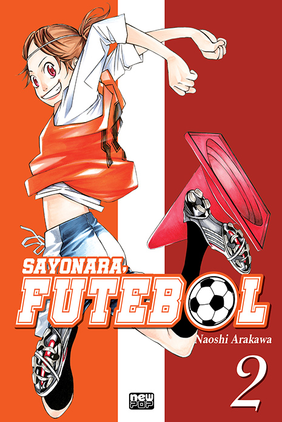

<html lang="en">

</html>

<head>
    <meta charset="UTF-8">
    <meta name="viewport" content="width=device-width, initial-scale=1.0">
    <link rel="stylesheet" href="pagina.css">
    <link rel="website icon" type="png" href="imagens/logo.png">
    <link rel="stylesheet" href="css-geral.css">
    <title>Pagina principal</title>
</head>

<body>
    <header>
        <div class="container">
            <h1>Bem-vindo à Manga Haven</h1> <a href="../tela-inicial/pagina-principal.html"></a>
            <nav>
                <ul>
                    <li><a href="../tela-inicial/pagina-principal.html">Home</a></li>
                    <li><a href="../tela-inicial/sobre-site.html">Sobre</a></li>
                    <li><a href="../tela-de-login/tela-de-login.html">Sair</a></li>
                </ul>
            </nav>
        </div>
    </header>
    <br><br><br><br><br><br><br><br><br><br><br><br><br><br>
    <main>
        <section class="produtos" id="dc">
            <div class="container">
                <h1>Sayonara Futebol vol.2
                </h1>
                <div class="grid-produtos">
                    <div class="item-produto" id="sayonara"> 
                    </div>
                </div>
            </div>
            <div class="item-produto">
                <h5>Sayonara Futebol vol.2
                </h5><br>
                <h5>Avalições:★★★★★(292)</h5><br>
                <h5>Detalhes:</h5>

                <p>Autor:Naoshi Arakawa</p>
                <p>Ano de Lançamento: 12 agosto 2020</p>
                <p>Descrição:Continuação da série que explora temas e histórias no contexto do futebol, oferecendo uma
                    visão aprofundada e envolvente do esporte. Volume 2 traz novos insights e narrativas sobre o
                    universo do futebol.</p> <br>
                <a href="https://www.amazon.com.br/Sayonara-Futebol-2-Naoshi-Arakawa/dp/8583624089" target="_blank">Mais
                    Detalhes</a>
                <br>
                <h5>Sobre:</h5>
                <p>
                    É o segundo volume do mangá escrito e ilustrado por Naoshi Arakawa, que também é conhecido por "Ao
                    Haru Ride". Esta série foca na vida de uma jovem que se apaixonou pelo futebol, mas enfrenta
                    desafios pessoais e emocionais ao tentar equilibrar sua paixão com outras responsabilidades.
                </p><br>
                <h4 id="valor">R$34,90</h4><br>
                <a href="../carinho-de-compras/sayonara.html">Adicionar ao carinho</a><br>
            </div>
        </section>
        <div>
        </div>
        </section>
    </main>

    <footer>
        <div class="container">
            <p>&copy; 2024 Manga Haven</p>
        </div>
    </footer>
</body>

</html>